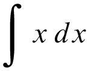

Llaves, paréntesis e integrales extensibles
Tipografía y notaciones científicas
Versión 1.0. 2011-12-23
En matrices y otros elementos matemáticos son necesarias llaves de gran tamaño, que no se pueden (o no se deberían) obtener aumentando sin más las llaves normales, del cuerpo de la letra. En su lugar, se recurre a dos soluciones:
- fundir llaves de muchos tamaños, con una curvatura apropiada a cada uno de ellos;
- crearlas a partir de unos pocos trazos que se pueden combinar, de modo que son más claramente rectas.
A continuación se muestran, respectivamente, estas dos opciones:
A las segundas se las llama extensibles (antaño también sistemáticas) y admiten un tamaño arbitrario a costa de una relativa pobreza visual. Las de forma curva, también llamadas de corte francés, no pueden ser extensibles; en cambio, las de forma recta, también llamadas de corte inglés, si pueden serlo.
Lo mismo se aplica a los paréntesis, también curvos y también necesarios en muchos tamaños.
Otro símbolo que requiere diferentes versiones según el tamaño es la integral, aunque normalmente con dos es suficiente:
Las puede haber extensibles y otras veces se toma el símbolo pequeño (como el que se puede encontrar en Symbol) y se aumenta; según el caso, el resultado va de lo pasable o lo francamente deficiente:

Más…
• Tipografía y notaciones científicas
En TeX
Todas la imágenes se han creado con TeX. Las llaves extensibles son las predeterminadas, mientras que las de corte francés son del paquete MathPro.